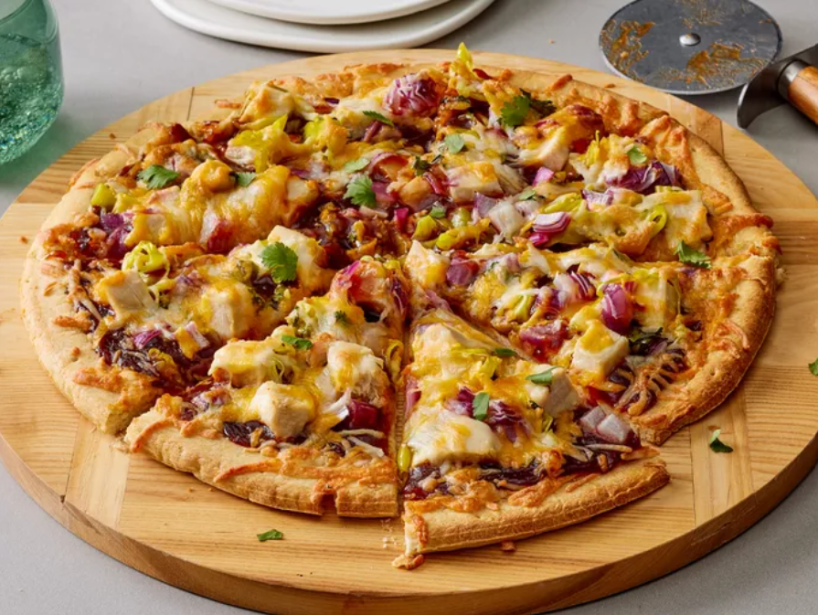

BBQ Chicken Pizza

This BBQ chicken pizza has spicy barbecue sauce, diced chicken, peppers, onion, and cilantro, all covered with cheese and baked to bubbly goodness! This is similar to a recipe I had at a popular pizza place in California. My family loves it!
This spicy twist on BBQ chicken pizza uses store-bought crust for an easy weeknight meal.
- 1 (12 inch) pre-baked pizza crust
- 1 cup spicy barbeque sauce
- 2 skinless boneless chicken breast halves, cooked and cubed
- 1 cup sliced pepperoncini peppers
- 1 cup chopped red onion
- ½ cup chopped fresh cilantro
- 2 cups shredded Colby-Jack cheese
Steps
- Step 1: Gather all ingredients. Preheat the oven to 350 degrees F (175 degrees C).
- Step 2: Place pizza crust on a baking sheet. Spread barbeque sauce on crust.
- Step 3: Top with chicken, pepperoncini peppers, onion, and cilantro.
- Step 4: Cover with Colby-Jack cheese.
- Step 5: Bake in the preheated oven until cheese is melted and bubbly, about 15 minutes.
Back